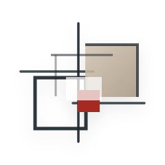
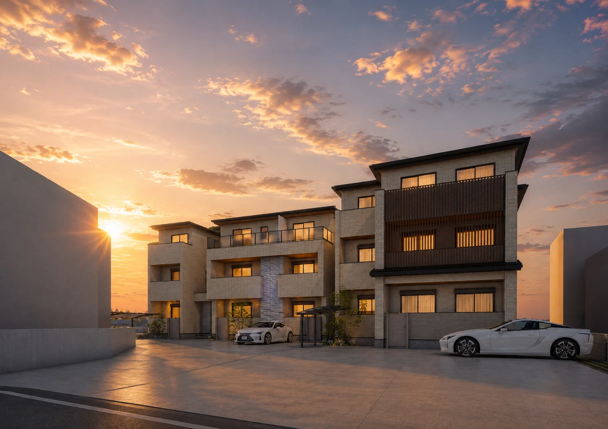
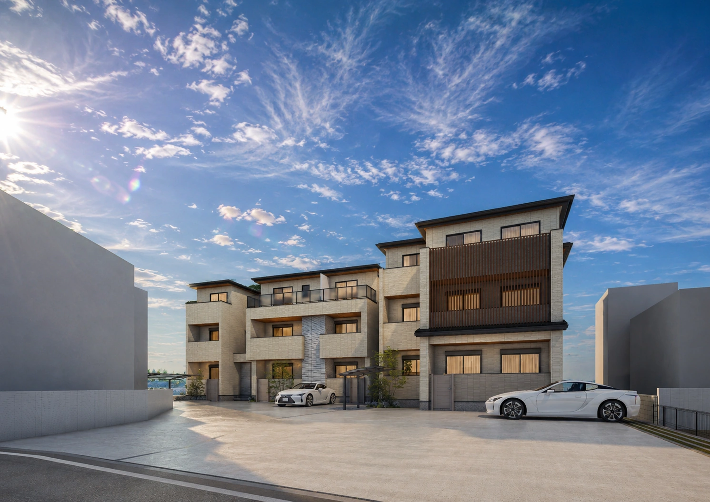

PHASE 0101
ゆとりある1LDK
9戸
42.34㎡〜57.50㎡。面積に幅を持たせ、同じ1LDKの中にも異なる暮らし方を受け止める余地をつくります。
- 専有面積
- 42.34㎡〜57.50㎡
- 住戸構成
- 1LDK · 9戸

OGURA TENNO
UJI · OGURA TENNOTWO BUILDINGS / 15 RESIDENCES
二棟で描く、ひとつの街並み。
01 · CONCEPT
1LDKと2LDK。異なる暮らしを受け止めながら、敷地全体をひとつの住環境として整える。
京都へ通う利便性と、宇治で暮らす穏やかさ。その両方を日常にできる小倉町天王に、二棟15戸の賃貸住宅を計画します。
単一の住戸タイプに偏らず、1LDKと2LDKを組み合わせることで、生活の変化や異なる住まい方を緩やかに受け止めます。

02 · ARCHITECTURE
軒の水平線、白い外壁、木調ルーバー。建物ごとの表情を持たせながら、素材と色調を穏やかに揃えました。
別々に建つのではなく、向き合い、つながり、敷地全体で一つの景観をつくる建築です。
03 · RESIDENTIAL COMPOSITION
9戸
42.34㎡〜57.50㎡。面積に幅を持たせ、同じ1LDKの中にも異なる暮らし方を受け止める余地をつくります。
6戸
60.66㎡・61.33㎡。居室と共用空間の役割を分けやすい、60㎡台の住戸構成です。
04 · LOCATION
二つの駅と日常利便が徒歩圏に揃う小倉町天王。移動の便利さだけでなく、毎日の買い物や暮らしの負担を抑えられることが、この場所の価値です。
MASTER SITE PLAN / UPDATED
05 · SITE PLANNING
建物の形を先に決めるのではなく、敷地条件を丁寧に読み解き、その答えとして二棟の配置を導きました。
採光、動線、駐車計画、住戸構成、外構計画。それぞれを個別に考えるのではなく、敷地全体を一つの計画として整理しています。
1LDK9戸と2LDK6戸という異なる住戸構成を組み合わせ、幅広い入居需要に応えながら、土地の活用性と住環境の両立を目指しました。
二棟という構成も、形を先に決めた結果ではなく、敷地と事業計画を検討する中で導かれた答えです。
06 · DESIGN CONCEPT
住戸構成が変われば、そこで営まれる暮らしも変わる。
二棟を同じ意匠で反復せず、それぞれが想定する暮らしから外観とインテリアの方向性を導きました。
PHASE 01 1LDK · 9 RESIDENCES
URBAN MODERN
単身者やカップル、DINKSの機動的な暮らしを想定し、直線的でシンプルなモダンデザインへ。
PHASE 02 2LDK · 6 RESIDENCES
WARM JAPANESE MODERN
家族で過ごす時間を想定し、木の質感と柔らかな色合いを基調とした和モダンへ。
異なる二つの方向性を、建物と住戸の具体から見ていきます。
07 · PHASE 01 / 1LDK
42.34㎡〜57.50㎡の1LDKを、3層・全9戸で構成。
面積の異なる住戸を揃え、家具配置や居場所の選択肢を確保しました。単身のゆとりある日常から、二人の暮らしまでを受け止めます。
外観と内観は、住戸の軽快さに呼応する端正な印象で統一しています。
08 · PHASE 02 / 2LDK
60.66㎡・61.33㎡の2LDKを、3層・全6戸で構成。
食事、寛ぎ、休息の場所を分けながら、家族が自然につながる住戸を計画しました。外観と内観は、日々の落ち着きにつながる温かな印象で揃えています。
09 · EXTERIOR SEQUENCE
昼の輪郭から、夕暮れの灯りまで。二棟の距離と素材の重なりを、異なる視点で確かめます。
10 · PLAN VIEWER
全体配置図｜1LDK棟と2LDK棟で構成する二棟計画
CLOSING STATEMENT
1LDKと2LDK。異なる価値を重ねながら、小倉町天王に長く選ばれる住まいを描きます。